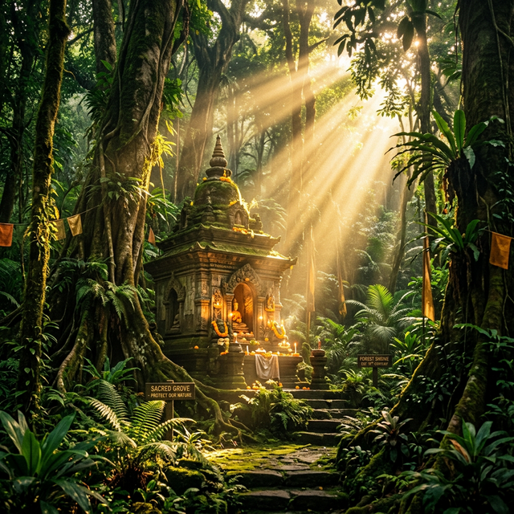
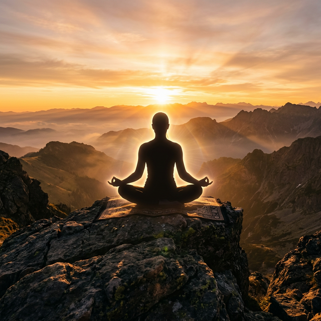
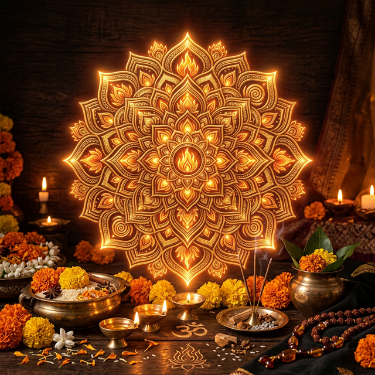
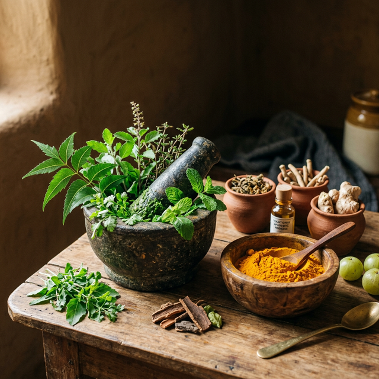

Prakruti Rakshan, Yoga, Yagya, Ayurveda Sanrakshan
Founded by Her Holiness Sri Sri 1008 Mahamandaleshwar Devi Maa Shivanginand Giri Ji, the PRYYAS Trust is an organization dedicated to the holistic upliftment of society and nature. We believe that true spiritual awakening is intimately connected with our environment, our physical health, and ancient wisdom. Through our four core pillars, we strive to bring balance and harmony to the world.
Our Four Pillars

Environment (Prakruti Rakshan)
We believe that serving nature is serving the Divine. Our initiatives include massive reforestation drives, river cleaning projects, and promoting sustainable, eco-friendly living practices. The Kashmir-to-Kanyakumari Environmental Foot March led by our founder is a testament to this unwavering commitment.

Yoga
Yoga is the union of the individual consciousness with the universal consciousness. We offer regular yoga and meditation retreats, bringing ancient yogic sciences to the modern world to foster physical health, mental peace, and spiritual realization.

Yajna (Yagya)
Scientific and spiritual purification through sacred fire. Yajna is an ancient Vedic practice that purifies the atmosphere and the self. We organize grand 108 and 1008 Kundiya Yajnas to generate positive cosmic energy, invoking blessings for world peace and universal prosperity.

Ayurveda
Preserving and promoting the ancient science of life. We focus on natural healing, awareness of medicinal plants, and holistic health practices. Our ashram maintains herbal gardens and provides Ayurvedic consultations to help individuals live in harmony with nature.